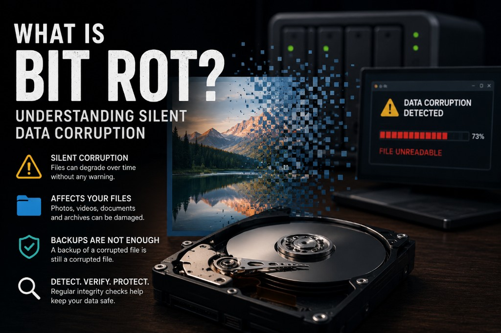

What Is Bit Rot? Understanding Silent Data Corruption
Most people assume that digital files remain unchanged forever.
Unfortunately, digital storage is not perfect.
Over time, files can become damaged without any visible warning signs.
This phenomenon is commonly known as bit rot.
Although relatively rare, bit rot can affect valuable photos, documents, videos and archives stored on hard drives, SSDs, NAS systems and other storage media.

What Is Bit Rot?
Bit rot is a form of silent data corruption.
It occurs when one or more bits inside a file change unexpectedly over time.
These changes may happen without any user action and often without generating any error message.
A single altered bit can be enough to damage a photo, document or archive.
In severe cases, entire files become unreadable.
Why Is It Called Silent Corruption?
Bit rot is often described as silent corruption because users usually do not notice it when it happens.
The file:
- Still exists
- Has the same filename
- Often keeps the same size
- Appears normal in the folder
The problem only becomes visible when someone tries to open the file.
By then, the corruption may have existed for months or even years.
What Causes Bit Rot?
Several factors can contribute to silent data corruption:
- Aging storage media
- Hard drive failures
- SSD memory degradation
- Magnetic decay
- Firmware bugs
- Faulty RAM
- Power interruptions
- Transfer errors
- Long-term storage without verification
In many cases there is no single obvious cause.
Can Bit Rot Affect Photos?
Yes.
Photographs are particularly vulnerable because many users archive them for years without opening them.
A corrupted image may:
- Fail to open completely
- Show missing areas
- Display unexpected colors
- Produce decoding errors
- Become partially unreadable
Affected formats can include:
- JPG
- JPEG
- TIFF
- PNG
- NEF
- CR2
- ARW
- DNG
Can Backups Protect Against Bit Rot?
Backups are essential.
However, backups alone do not automatically prevent bit rot.
If a corrupted file is copied into a backup, the corruption may also be copied.
Over time, multiple backup copies can contain the same damaged file.
This is why the following statement is important:
Backups protect against loss.
Integrity verification protects against corruption.
Both are necessary.
How NAS Systems Handle Bit Rot
Many NAS systems provide excellent storage reliability.
Some advanced file systems include protection mechanisms such as checksums and integrity validation.
However, protection levels vary depending on:
- Hardware configuration
- RAID level
- File system
- Operating system
- Backup software
Users should never assume that long-term integrity verification is happening automatically.
Regular verification remains important.
How to Detect Bit Rot
The most reliable approach is periodic integrity verification.
Important files should be checked regularly to confirm that they remain readable.
For photo archives this means:
- Opening image files
- Verifying RAW files
- Checking documents
- Monitoring backup copies
- Generating integrity reports
Regular verification helps identify corruption before it becomes permanent.
How Check Your Backup Helps
Check Your Backup helps detect signs of file corruption before they become a disaster.
The software:
- Opens supported files read-only
- Detects corrupted photos
- Detects unreadable files
- Verifies photo archives
- Generates integrity reports
- Never modifies your files
All analysis runs locally on your computer.
Nothing is uploaded.
Nothing is changed.
Conclusion
Bit rot is one of the least understood risks in digital preservation.
Files can slowly become corrupted without obvious warning signs, even when backups exist.
The best protection combines:
- Reliable backups
- Multiple storage copies
- Periodic integrity verification
Your backups are only valuable if the files inside them are still readable.
Download Check Your Backup
Detect corrupted files before they spread across your backups.
Download Free